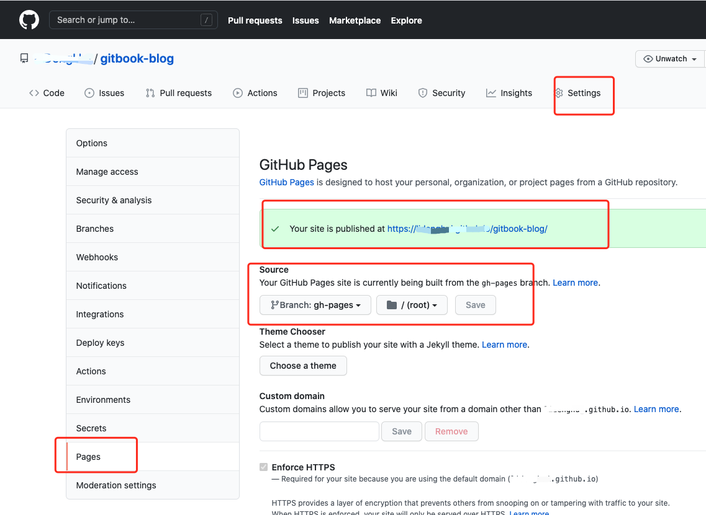

添加github的静态站点
配置静态站点分支
在分支上创建 gh-pages 分支
配置静态站点路径

使用·gh-pages·库添加分支
var ghpages = require('gh-pages');
ghpages.publish('_book', function(err) {
if(err) {
console.log("publish Error", err)
}
console.log('publish Success')
});
该命令会自动将 _book文件推送到远程的 gh-pages分支